Ubuntu安装基础教程
作者：TeliuTe 来源：基础教程网
Win7 硬盘安装 Ubuntu 返回目录 下一课Win7 硬盘安装 Ubuntu 与 XP 类似，操作中注意细心，下面来看一个练习；
下载 Ubuntu 的 desktop 光盘镜像iso文件，如 ubuntu-11.10-desktop-i386.iso：http://mirrors.sohu.com/ubuntu-releases/11.10/
其他下载地址：
http://mirrors.163.com/ubuntu-releases/
http://mirrors.sohu.com/ubuntu-releases/
http://cn.archive.ubuntu.com/ubuntu-releases/
http://ubuntu.srt.cn/ubuntu-releases/
http://tw.archive.ubuntu.com/ubuntu-releases/
http://mirror.switch.ch/ftp/ubuntu-cdimage/
http://ftp.heanet.ie/mirrors/ubuntu-cdimage/
http://ftp.kddlabs.co.jp/020/Linux/packages/ubuntu/releases-cd/
教育网用户：http://ftp.sjtu.edu.cn/ubuntu-cd/
其他下载地址可以在Ubuntu中文论坛里搜索一下：http://forum.ubuntu.org.cn/viewforum.php?f=77
1、检查 Win7 保留分区
1）进入 Win7 打开库文件夹，在左侧栏找到“计算机”，瞄准点右键选择“管理”菜单；
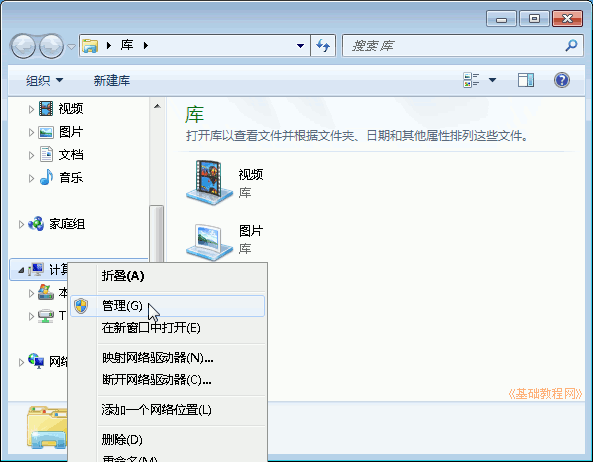
2）在出来的管理面板左边找到“磁盘管理”，点击它，在右边出来各个分区；
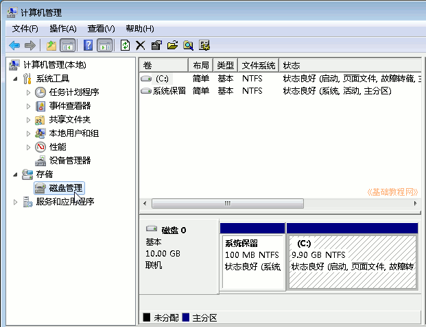
注意：如果里面有一个100M的系统保留分区，则进行下面(3－６)的操作，否则请跳至第2步复制启动文件；
3）瞄准100M“系统保留”分区点右键，选择“更改驱动器号和路径”菜单；
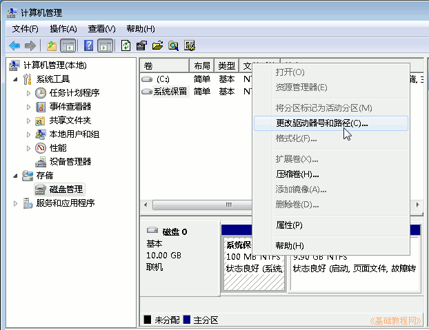
4）在出来的面板中，点左下角的“添加”按钮；
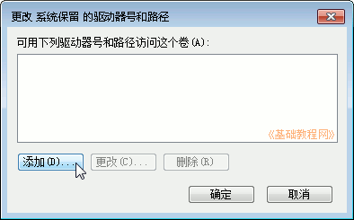
5）然后在出来的面板右上角选择一个盘符，用后面一点的字母，然后点确定；
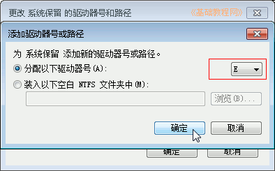
6）然后回到“计算机”文件夹，就会发现多了一个磁盘分区，打开里面是空的；
2、复制启动文件
(注意：如果没有100M系统保留分区，那么就把这些文件复制到 C: 盘)
1）把下载的 Ubuntu 镜像文件复制到 C: 盘，用 7-zip 或 WinRAR 打开；
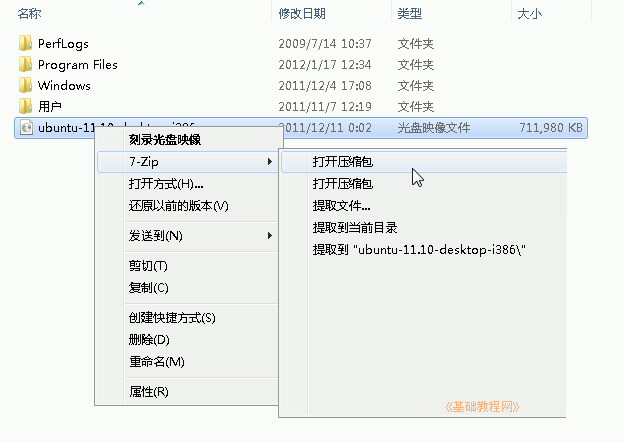
2）找到 casper 文件夹双击打开，里面有一个 i 开头和 v 开头的文件；
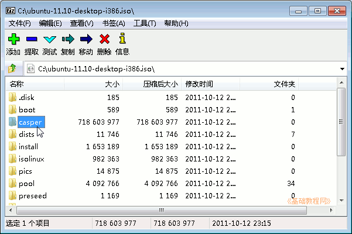
3）打开前面准备的系统保留分区，把 casper 里的 initrd.lz 文件拖到这个分区窗口里，
如果没有保留分区就拖到 C: 盘，出来提示点“继续”；
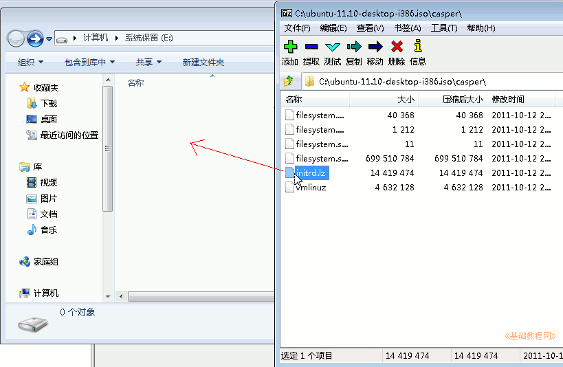
4）同样把 vmlinuz 拖到这个分区里，关闭7z压缩包窗口；
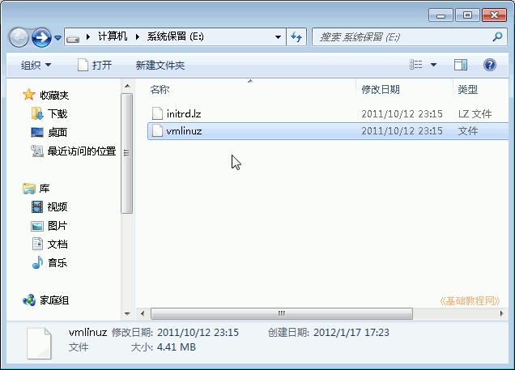
3、制作menu.lst文件
1）打开记事本，输入下面的内容，也可以复制粘贴进去，把第三行中 filename=/ 后面的文件名改成对应的，本课文件夹中有这个menu.lst 文件(点右键，选“目标另存为”)；
2）点菜单“文件－保存”，位置保存在系统保留磁盘，文件名输入 "menu.lst" ，注意有一对英文的双引号；
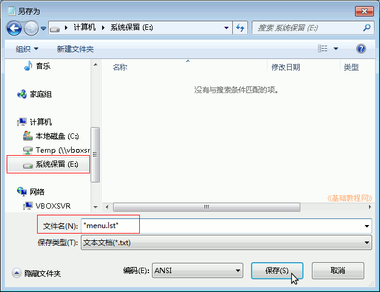
3）再下载一个 g2ldr 和 g2ldr.mbr 文件，也复制到系统保留磁盘，本课的文件夹里有这个g2ldr 和 ，g2ldr.mbr 文件；
4）再在系统保留磁盘中创建一个 boot.ini 文件，里面输入下面的内容：（本课有这个boot.ini 文件，点右键，选“目标另存为”）
这样在系统保留磁盘里面就有6个复制过来的文件，在 C: 盘里有一个 Ubuntu 镜像文件，仔细检查一下数量和图标类型；
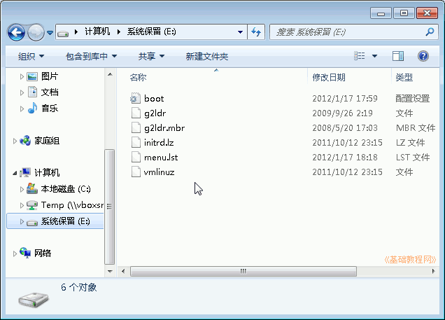 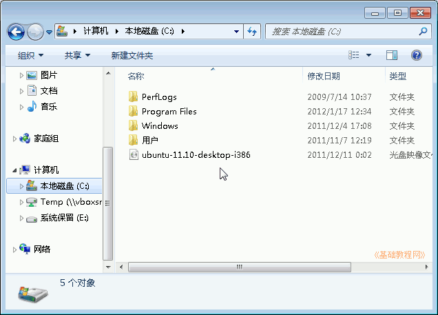
4、关闭系统保留分区
1）检查完各个文件以后，关闭系统保留分区窗口，重新回到“计算机管理－磁盘管理－更改驱动器号和路径”；
2）在出来的面板中，点击右下角的“删除”按钮；
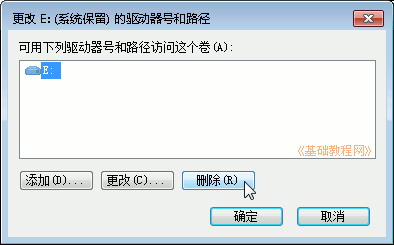
3）在出来的确认对话框中，点“是”；
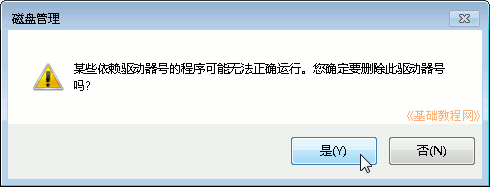
4）在接下来的警告对话框中，点“是”；
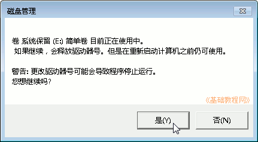
5）这样就将分配的盘符去掉了，然后关闭这个管理窗口；
5、安装Ubuntu系统
1）重新启动计算机，在出现启动菜单时，按下方向键选择“Ubuntu”，按回车键进入；
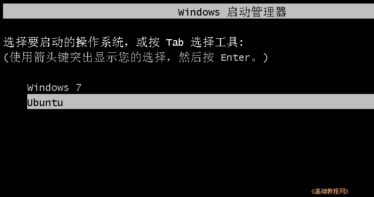
2）在接下来的 Install Ubuntu 菜单中，直接按回车键进入；
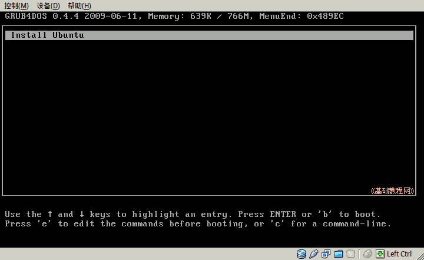
3）耐心等待系统加载，直到出现桌面，点一下左上角的圆圈按钮，稍等在旁边出来的文本框中输入字母 ter 然后点击下边出来的终端图标；
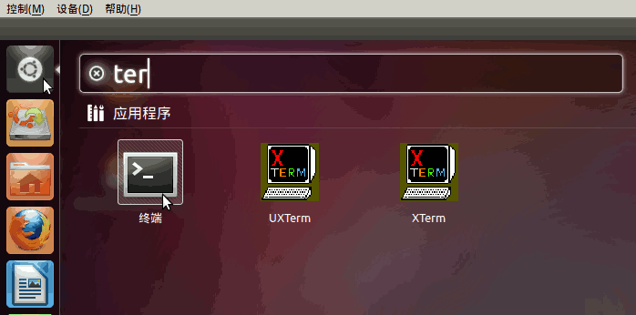
4）在出来的终端窗口中，输入 sudo umount -l /isodevice 然后按回车键；
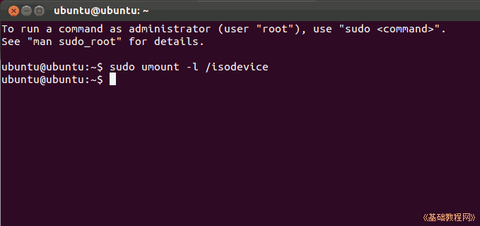
5）双击桌面上的“安装 Ubuntu”图标，稍等进入安装对话框；
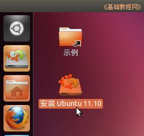
6）在“安装类型”这一步时，选择“其他选项”，然后点继续；
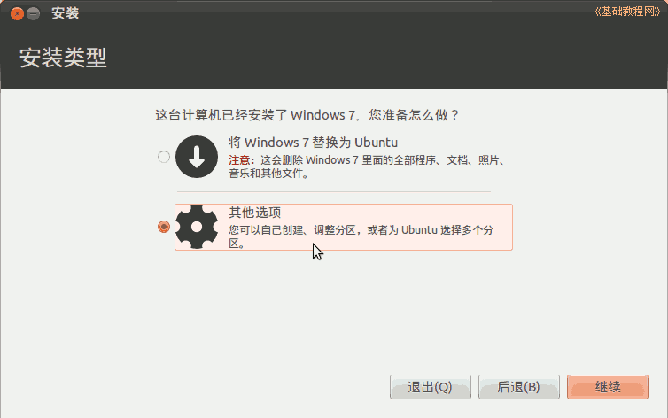
7）在分区这一步时，点击下边的引导器位置下拉列表，将引导器安装到 Ubuntu 所在的分区；
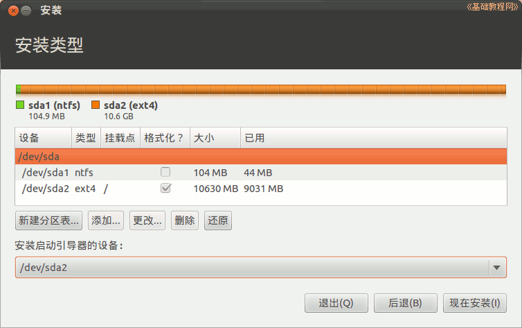
6、Win7引导双系统Ubuntu
1）然后一步步安装完以后，重启计算机进入 Win7，把 C: 盘中的 Ubuntu 镜像文件删除，
2）重新进入系统保留分区(如果没有保留分区就打开C:盘)，删除 menu.lst 文件，然后再关闭系统保留分区：
切记：一定要将分配给系统保留磁盘的盘符去掉；
重启动计算机，在启动菜单那儿依次选择“Ubuntu－Ubuntu/Linux”就可以进入到 Ubuntu 系统了；
以下供参考：
3）如果在Ubuntu12.10中，则需要使用 menu.lst文件，用记事本打开 menu.lst，将里面的内容换成下面的，本课文件夹中有这个menu.lst 文件(点右键，选“目标另存为”)：
如果 /boot 是单独分区的，使用下面这样的：
本节学习了Win7 硬盘安装 ubuntu 的基本方法，如果你成功地完成了练习，请继续学习下一课内容；
本教程由86团学校TeliuTe制作|著作权所有
基础教程网：http://teliute.org/
美丽的校园……
转载和引用本站内容，请保留版权信息和本站链接。